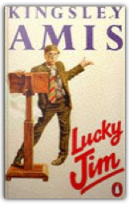
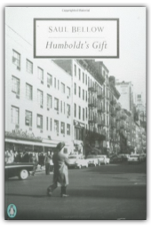

|
The Caged Virgin: An Emancipation Proclamation for Women and Islam
Ayaan Hirsi Ali

Muslims who explore sources of morality other than Islam are threatened with death, and Muslim women who escape the virgins' cage are branded whores. So asserts Ayaan Hirsi Ali's profound meditation on Islam and the role of women, the rights of the individual, the roots of fanaticism, and Western policies toward Islamic countries and immigrant communities. Hard-hitting, outspoken, and controversial, The Caged Virgin is a call to arms for the emancipation of women from a brutal religious and cultural oppression and from an outdated cult of virginity. It is a defiant call for clear thinking and for an Islamic Enlightenment. But it is also the courageous story of how Hirsi Ali herself fought back against everyone who tried to force her to submit to a traditional Muslim woman's life and how she became a voice of reform.

Lucky Jim
Kingsley Amis
First published in 1954, this novel tells the story of Jim Dixon - lower middle-class anti-hero - charting his social gaffes, cultural philistinism, inept relationships and crawling to superiors. The author's other books include "The Old Devils", which won the 1986 Booker Prize.  Money: A Suicide Note
Martin Amis
Money: A Suicide Note
Martin Amis
The story of John Self and his insatiable appetite for money, alcohol, drugs, porn and more. Ceaselessly inventive and thrillingly savage, it is a tale of life lived without restraint; of money and the disasters it can precipitate.
Experience
Martin Amis
Martin Amis is perhaps the most gifted and innovative novelist of his generation. His prose refashions the English language into a lean and brilliant instrument, dazzling readers with its energy and wit. In this much anticipated memoir, Amis writes with striking candour about his life and looks intimately at the process of writing itself.As the son of a famous writer, the great comic novelist Kingsley Amis, Martin Amis' explores his relationship with his father and writes about the various crises of Kingsley's life, including the final crisis of his death. Amis also examines the case of his cousin, Lucy Partington, who disappeared without trace in 1973 and was exhumed in 1994 from the back garden of Frederick West, Britain's most prolific serial killer. Inevitably, too, the memoir records the changing literary scene in Britain and the United States, with many anecdotes and pen portraits.
The War Against Cliche: Essays and Reviews 1971-2000
Martin Amis
Is there anything that Martin Amis can’t write about? In this virtuosic, career-spanning collection he takes on James Joyce and Elvis Presley, Nabokov and English football, Jane Austen and Penthouse Forum, William Burroughs and Hillary Clinton. But above all, Amis is concerned with literature, and with the deadly cliches–not only of the pen, but of the mind and the heart.
Yellow Dog
Martin Amis
When 'dream husband' Xan Meo is vengefully assaulted in the garden of a London pub, he suffers head-injury, and personality-change. Like a spiritual convert, the familial paragon becomes an anti-husband, an anti-father. He submits to an alien moral system - one among many to be found in these pages. We are introduced to the inverted worlds of the 'yellow' journalist, Clint Smoker; the high priest of hardmen, Joseph Andrews; the porno tycoon, Cora Susan; and Kent Price, the corpse in the hold of the stricken airliner, apparently determined, even in death, to bring down the plane that carries his spouse. Meanwhile, we explore the entanglements of Henry England: his incapacitated wife, Pamela; his Chinese mistress, He Zhezun; his fifteen-year-old daughter, Victoria, the victim of a filmed 'intrusion' which rivets the world - because she is the future Queen of England, and her father, Henry IX, is its King. The connections between these characters provide the pattern and drive of "Yellow Dog". Novelists have noticed that contemporary reality keeps outdoing their imaginations. Yet there is still the obligation to attempt a reading of the present and the very near future. If, in the twenty-first century, the moral reality is changing, then the novel is changing too, whether it likes it or not. "Yellow Dog" is an early example of how the novel, or more particularly the comic novel, can respond to this transformation. But Martin Amis is also concerned here with what is changeless and perhaps unchangeable - patriarchy, and the entire edifice of masculinity; the enormous category-error of violence, arising between man and man; the tortuous alliances between men and women; and the vanished dream (probably always an illusion, but now a clear delusion) that we can protect our future and our progeny.
The Second Plane: September 11, 2001-2007
Martin Amis
Martin Amis first wrote about September 11 a week later in a piece for "The Guardian" beginning, 'It was the advent of the second plane, sharking in low over the Statue of Liberty: that was the defining moment.' And he has kept returning to September 11, in essays and reviews, and in two remarkable short stories, 'In the Place of the End' and 'The Last Days of Muhammad Atta'. All are collected here, together with an expanded account of his travels with Tony Blair in 2007 - to Belfast, to Washington, and to Baghdad and Basra. 'We are arriving at an axiom in long-term thinking about international terrorism,' he writes: 'the real danger lies, not in what it inflicts, but in what it provokes. Thus by far the gravest consequence of September 11, to date, is Iraq ...Meanwhile, September 11 continues, it goes on, with all its mystery, its instability, and its terrible dynamism.'
The Origins of Totalitarianism
Hannah Arendt
Hannah Arendt's definitive work on totalitarianism and an essential component of any study of twentieth-century political history
Pinochet in Piccadilly
Andy Beckett
In October 1998, General Augusto Pinochet, former dictator of Chile, was arrested in London. He had been charged with crimes against humanity by a Spanish magistrate, but over the 16 months that Pinochet was detained, equally intriguing questions went unanswered about his links with Britain. Why was Margaret Thatcher so keen to defend the General? Why was Tony Blair's usually cautious government prepared to have him arrested? And why was Britain the General's favourite foreign country? Andy Beckett offers a compound of history, investigation and travelogue that unravels this strange story.

Humboldt's Gift
Saul Bellow
A chronicle of success and failure, this work is Bellow's tale of the writer's life in America. When Humboldt dies a failure in a seedy New York hotel, Charlie Citrine coping with the tribulations of his own success, begins to realize the significance of his own life.
The Adventures of Augie March
Saul Bellow
As soon as it first appeared in 1953, this gem by the great Saul Bellow was hailed as an American classic. Bold, expansive, and keenly humorous, The Adventures of Augie March blends street language with literary elegance to tell the story of a poor Chicago boy growing up during the Great Depression. A "born recruit," Augie makes himself available for hire by plungers, schemers, risk takers, and operators, compiling a record of choices that is-to say the least- eccentric. |
 Made with Delicious Library
Made with Delicious Library
Springfield, VA zipflap congrotus delicious library Fogus, Michael